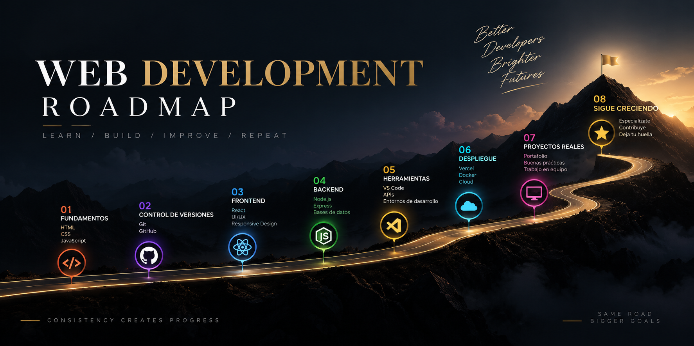

Roadmap para aprender desarrollo web

Aprender desarrollo web puede parecer complicado al principio, pero seguir un camino ordenado ayuda a entender mejor cada etapa del proceso.
Antes de avanzar hacia tecnologías complejas, es importante construir una base sólida con los fundamentos de la web y comprender cómo se estructura una página desde cero.
Primeros pasos para aprender desarrollo web
El camino para aprender desarrollo web empieza por comprender la estructura de una página, el papel de cada etiqueta y la forma correcta de organizar el contenido.
Después, el alumno puede avanzar hacia tecnologías que permiten mejorar el diseño, añadir interactividad y crear aplicaciones más completas.
- Aprender la estructura básica de HTML.
- Entender el uso de etiquetas semánticas.
- Organizar correctamente textos, enlaces e imágenes.
- Crear formularios y páginas conectadas entre sí.
- Aprender CSS para mejorar el diseño visual.
- Introducir JavaScript para añadir interactividad.
- Practicar con proyectos reales.
La importancia de avanzar paso a paso
El desarrollo web se aprende mejor cuando se avanza de forma ordenada. Dominar primero las bases permite comprender mejor las tecnologías más avanzadas y evita construir proyectos sin una estructura clara.
Por eso, crear pequeñas páginas, practicar enlaces, formularios, imágenes y contenido semántico es una parte fundamental del aprendizaje.
Volver al blog